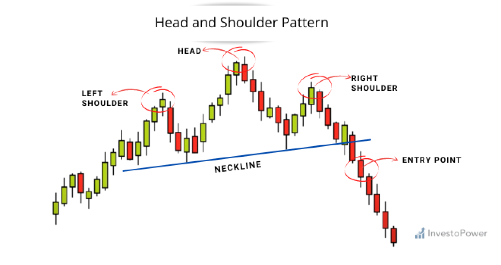

How to trade the Head and Shoulders pattern
The head and shoulders pattern is exactly what it sounds like. Price action will move up than pull back to make a left shoulder. Than price action will
breakout higher above the left shoulder creating a head. The price action will than break lower than the left shoulder to than return back to left shoulder,
creating a right shoulder.

What is the psychology behind the Head and shoulders pattern
The Psychology of the head and shoulders pattern is that price action broke the previous higher
high (Left shoulder), and now a new high (Head). In price action when it make a higher higher
the previous high needs to hold as support. In this pattern that previous support does not hold, and prcie action keeps
dropping past support. creating a change of character. It will bounce off the lower support level, than retrace back to left shoulder resistance,
creating a right shoulder.
How to trade the Head and Shoulders pattern and be profitable
1) one way to trade the head and shoulders reversal pattern is to wait until the neckline is broken by price action.
once you get the confirmation that neckline support did not hold you can look to go short on this trade.
2) Another way to trade the head and shoulders pattern is to wait for a pull back to the neckline that was formed. once it retraces back
to the neckline look to go short.
3) The last way you can trade the head and shoulders pattern is to take a early trade at the right shoulder. Since the left shoulder support did not
hold from the head that was created, we would look to to short at this area.